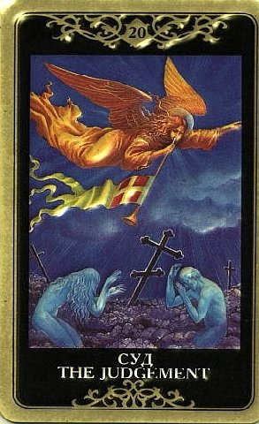

Это благополучное завершение какой-либо кризисной фазы, чудесное избавление от множества трудностей, перспектива одним махом избавиться от всего, что гнетет и давит.
Либо исполнится давнее желание, либо жизнь в целом выйдет на более высокую ступень благополучия, как духовного, так и материального

Суд – всегда символизирует изменение ситуации, всегда радикальные ПЕРЕМЕНЫ К ЛУЧШЕМУ, успешное преодоление проблем, избавление от ограничений и препятствий.
Есть смысл обеими руками хвататься за них, ничего не боясь.
Эта редчайшая возможность может и ускользнуть, если будешь колебаться, малодушничать и откладывать решение.
Это может касаться карьеры, романа, чего угодно.
Избавление от печали и страданий, освобождение от всего, что сковывало и мешало действовать по своему усмотрению. Завершение какого-то трудного этапа, большое облегчение, потому что открывается новая жизненная перспектива.
Возвращение здоровья, радости, удачи, счастья, возможности дышать полной грудью, как сам человек это понимает.
Можно ожидать новости, важного известия, которое повлияет на продвижение вперед.
Результат будет ясен, и все будет к лучшему, все равно, мирской или духовной жизни касается вопрос.
Если вопрошающего мучает какая-то проблема, то вскоре все разрешится, причем самым наилучшим образом.
Его присутствие в раскладе дает понять, что вопрос очень значимый и от него нелегко будет увернуться.
Выпадая в раскладе, Суд говорит, что вопрошающий находится на правильном пути (неважно, как велики сомнения), верный выбор уже сделан, а препятствия уже практически преодолены.
Традиционные значения Суда – окончательное решение, не подлежащий обжалованию приговор, перемена участи.
Зачастую по Суду человек оказывается перед очень серьезным выбором, необходимостью принять большое решение.
Оставление одного пути и переход на другие рельсы, возврат к некогда потерянному образу жизни (и это воспринимается как обновление и возрождение).
Большинство авторов считает, что Суд символизирует не необходимость или возможность изменения, а уже произошедшую перемену.
И совершеннно не важно, наступает ли этот переход в результате внутренней работы или стечения внешних обстоятельств, потому что внутренний и внешний миры являются отражением друг друга.
По сути дела здесь человек уже изменился, его старое я и старая обусловленность уже умерли, жизнь уже приобрела новое измерение, вопрос лишь в том, чтобы ясно это осознать.
В то же время на практике Двадцатый Аркан может проявляться и настораживающим образом. Суд редко бывает сиюминутным. Обычно карта описывает какой-то важный, серьезный, долгоиграющий опыт. Для людей ищущих покоя и сохранения status quo, Суд означает нарушение привычного хода вещей, трансформацию, преобразование.
Кроме того, присутствие Суда в раскладе может говорить о том, что ответы на вопросы относительно текущего положения дел следует искать в прошлом, которое просматривается человеком на этой стадии довольно отчетливо.
ЛИЧНЫЕ ОТНОШЕНИЯ
Суд несет большие перемены в личной жизни.
На практике он чаще всего дает шанс искупить прошлые грехи, загладить ошибки, восстановить гармонию на определенном уровне – все приходит на круги своя.
Улучшение и обновление отношений, прощение старых обид.
Считается, что по Суду идут излечение от старых ран, прощение врагов, людей, причинявших боль, распутывание кармических узлов и решение наболевших проблем.
Затрудняющие жизнь противоречения действительно сглаживаются, а из порочного круга удается выбраться.
Человеку, долгое время пребывавшему в одиночестве (особенно если его описывает Отшельник или близкий по смыслу сигнификатор) Суд предвещает внезапное обретение второй половины.
По Суду находится и обретает новую жизнь то, что считалось утраченным, и отношений это тоже касается.
Суд извещает об освобождении всего, что летаргическим сном, похожим на смерть, спало внутри нас, и это внутреннее пробуждение приводит к новым ситуациям, означает глубокие изменения.
Любовь, которая казалась давно и безнадежно потерянной, вновь вступает в свои права. «Труба зовет», чувства воскресают, есть смысл откликнуться на этот зов. Второго шанса может не быть еще очень и очень долго.
Тем более, что Суд сам по себе помогает принятию окончательного решения и началу новой жизни.
По сути это триумфальная весть о воссоединении и воскрешении.
Здесь, конечно, надо обращать внимание на сопутствующие Арканы - иногда по Суду воскресает то, что уж лучше бы тихо лежало, и человек досадует на свою неспособность заколотить крышку этого гроба как следует.
Иногда, при соответствующих Младших Арканах – прибавление в семействе.
В отдельных случаях Суд описывает безусловно трансформацию и призыв в области личной жизни, которые оказываются для вопрошающего тяжелым испытанием.
Например, это чрезвычайно сильная любовь и самоотдача со стороны другого человека, на которые надо ответить по прямому смыслу, например, отозваться на предложение о браке.
Вопрошающий это чувствует как своего рода «долг», надо сказать «да» (и это как правило и есть долг – кармический! строго в соответствии со значением Аркана), но вот выполнить этот долг и этот внутренний приказ ему может быть сложно в силу целого ряда обстоятельств (надо смотреть на окружающие карты).
Опять же, «труба зовет», есть громкий призыв от другого человека и суперэго подало знак, что надо действовать, но если человек ему не подчинится («а как же мое эго?!» то, которое не «супер», а просто эго), то последствия будут...плутонические. Вплоть до полного развала жизни или здоровья по непонятным причинам. Так работает Суд. Так работает Плутон. Эго не в счет.